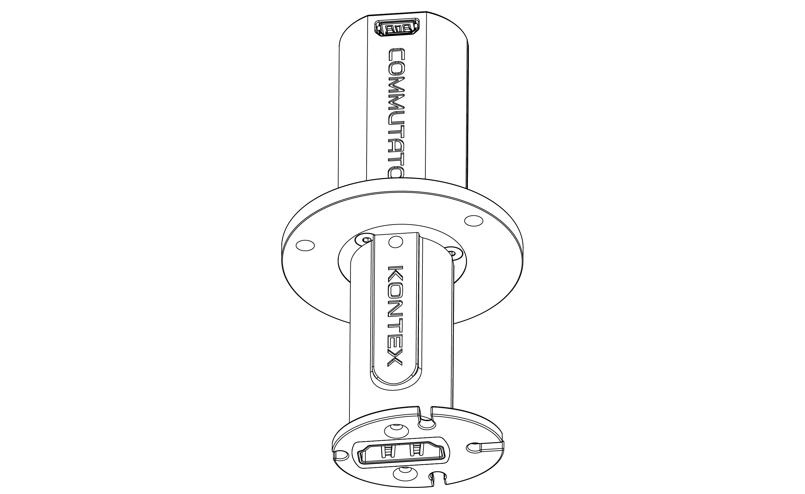
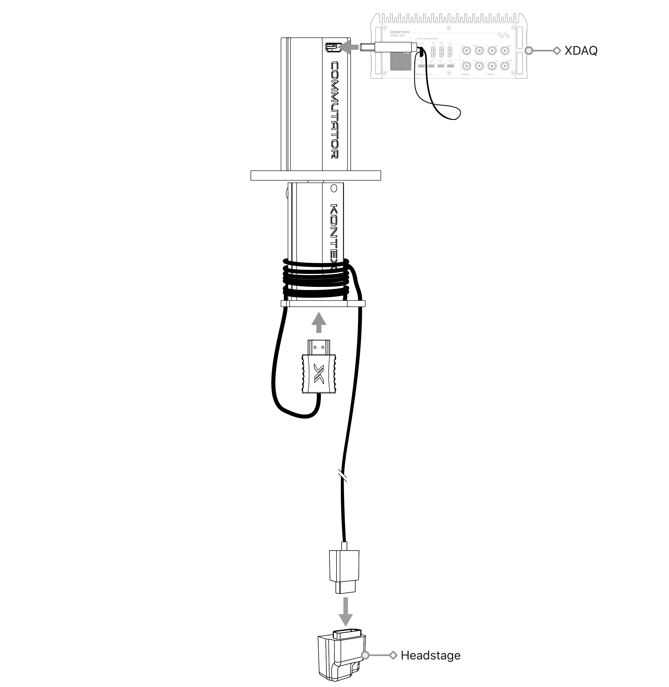
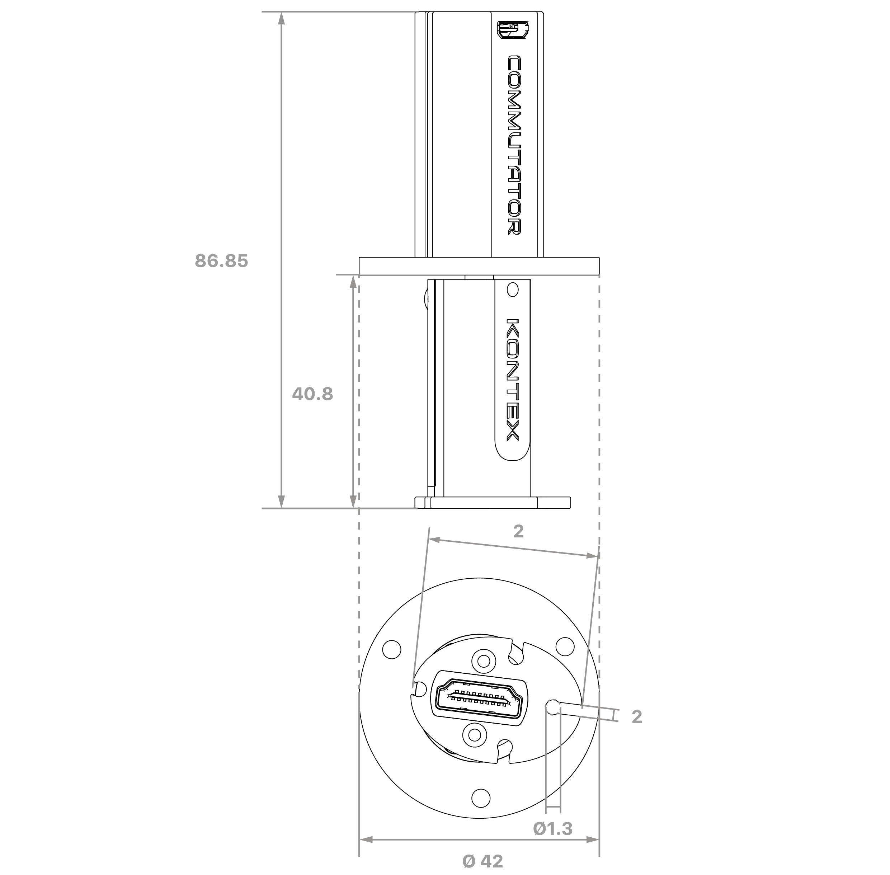
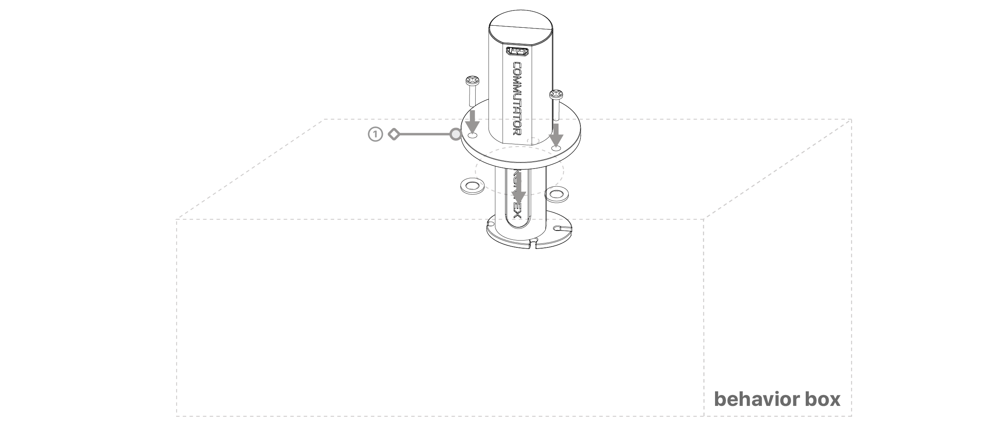
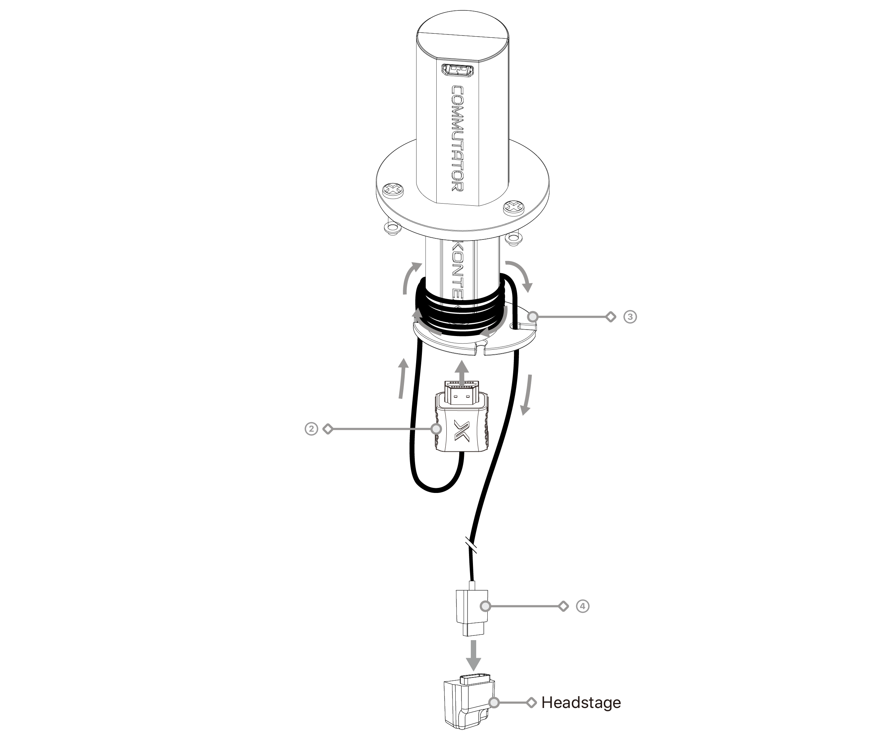
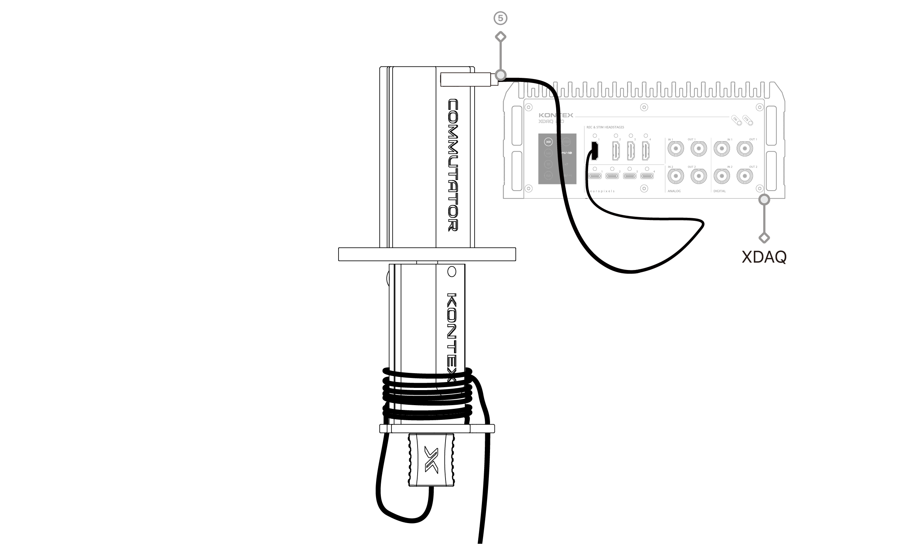
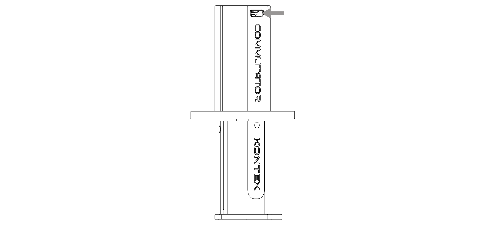
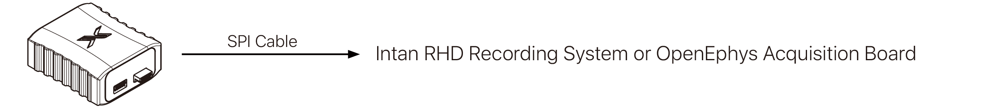
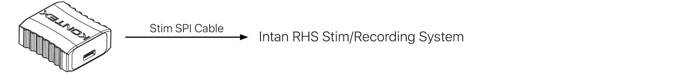
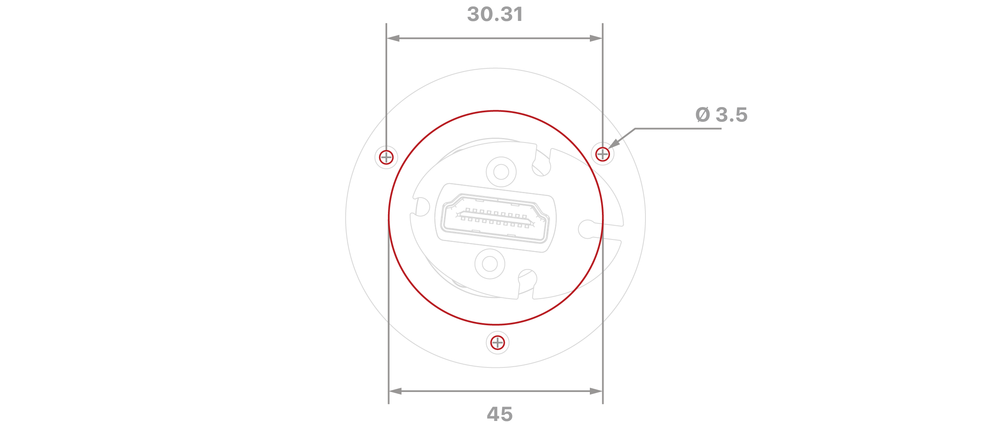

Standard Commutator HDMI

Overview
This commutator is intended for use in freely moving or rotating experimental setups, where continuous rotation is required without compromising signal continuity or introducing additional electrical noise.
Commutator STD Overview

- The commutator operates as a fully passive device, containing no active electronics or signal conditioning components.
- Signal transmission is maintained through internal rotating contacts, allowing unrestricted rotational motion while preserving channel integrity.
- The passive design ensures zero power consumption and eliminates potential noise sources associated with active circuitry.
Dimension

unit: mm
Key Features
- Passive Signal Routing
Fully passive design with no active electronics, ensuring transparent signal transmission without added noise or power requirements.
- Low-Torque Continuous Rotation
Smooth, low-resistance rotation minimizes cable twisting and mechanical stress during freely moving behavioral experiments.
- X-Headstage Compatibility
Compatible with KonteX XR headstages (up to 256 channels) and XSR headstages (up to 32 channels) via an HDMI-based interface.
- HDMI High-Density Interface
Standardized HDMI connectors provide reliable, high-density signal routing and ease of system integration.
- Optimized Mechanical Design
Designed for overhead mounting with durable construction to support repeated rotation and long-term experimental use.
- Reduced Cable and Connector Wear
Proper cable routing around the rotating shaft reduces strain, extending cable and connector lifespan.
Assembly Process

① Mounting the Commutator
Securely mount the Standard Commutator HDMI (Commutator STD) above the behavior box or experimental arena. Ensure the commutator is firmly fixed and aligned vertically to allow smooth, unrestricted rotation during operation.

② Headstage-to-Commutator Connection
Using a compatible HDMI cable, connect the X-Headstage to the Commutator STD. Verify that the connectors are fully seated and properly aligned before proceeding.
③ Cable Routing and Strain Management
Route the cable according to the illustrated configuration, wrapping and securing it around the rotating shaft of the Commutator STD as indicated. Leave sufficient cable length to accommodate the animal’s full range of motion while minimizing excess slack that could introduce mechanical drag or tangling.
④ Final Headstage Connection
Connect the opposite end of the HDMI cable to the X-Headstage. Confirm that the connection is secure and that the cable routing does not impose axial or lateral forces on the headstage connector.

⑤ Commutator-to-XDAQ Connection
Connect the fixed (non-rotating) end of the Commutator STD to the XDAQ acquisition system using a compatible HDMI cable. Ensure the connection is secure and that the cable is properly strain-relieved.
NOTE: 1. Mount the commutator in a vertical orientation to ensure optimal rotational performance.
2. Avoid excessive axial or lateral forces on the HDMI connectors.
3. Ensure sufficient cable slack to allow free rotation without tension.
Using the Commutator STD with Intan or Open Ephys Acquisition Systems

Front side
uHDMI to RHD adapter
SKU: SAdpt-uHDMI-OM12

uHDMI to RHS Adapter
SKU: SAdpt-uHDMI-OM16

Bottom view
XDAQ to RHD headstage adapter
SKU: SAdpt-XDAQ-OM12
XDAQ to RHS headstage adapter
SKU: SAdpt-XDAQ-OM16
Undermount Cutout Installation Sepcification

Cutout Dimensions Diagram
unit: mm